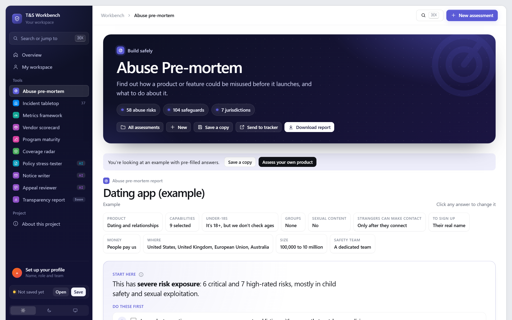
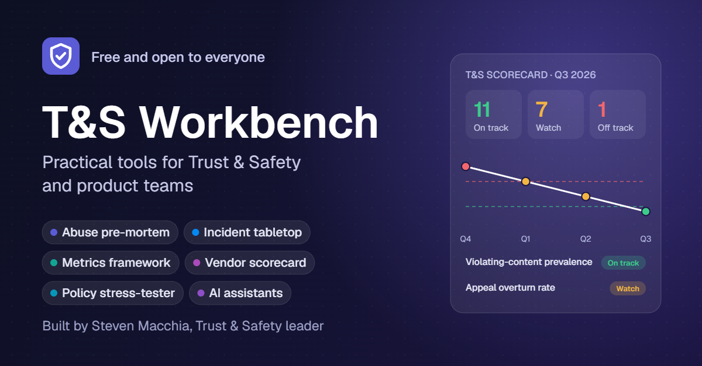
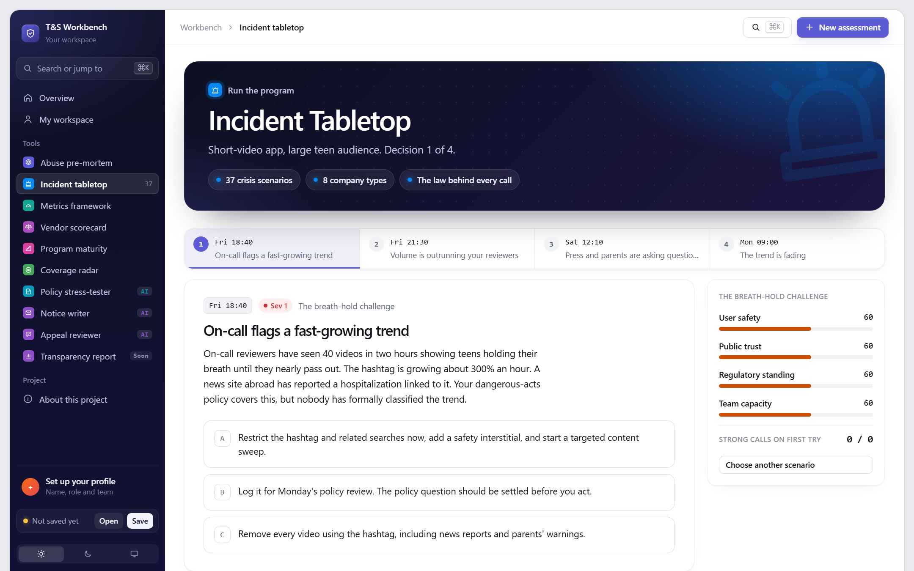
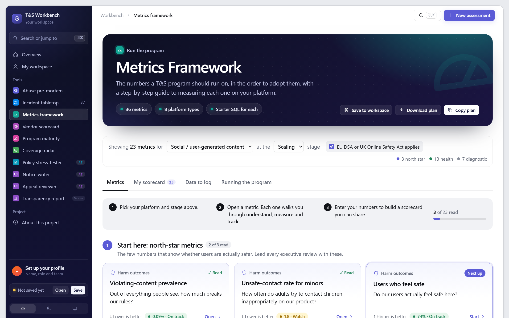
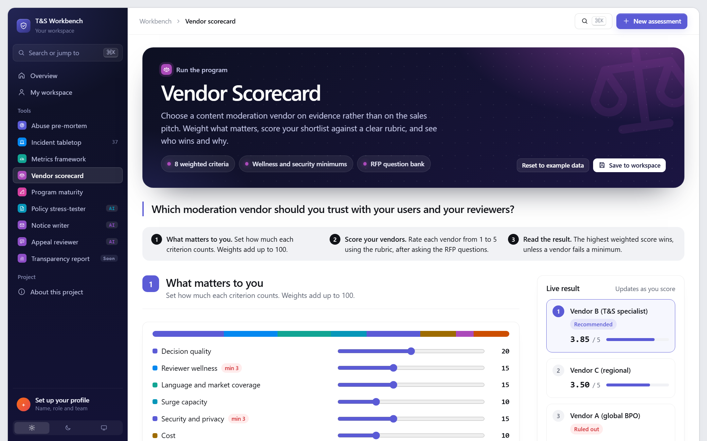
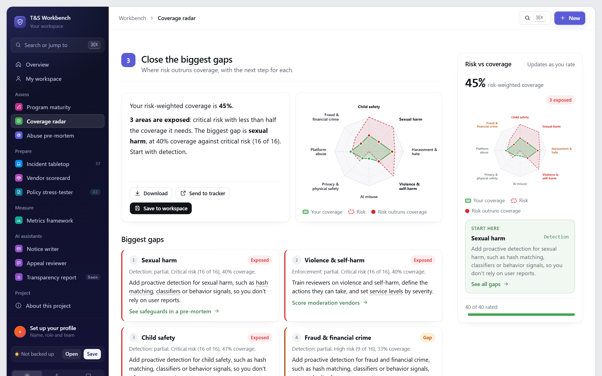
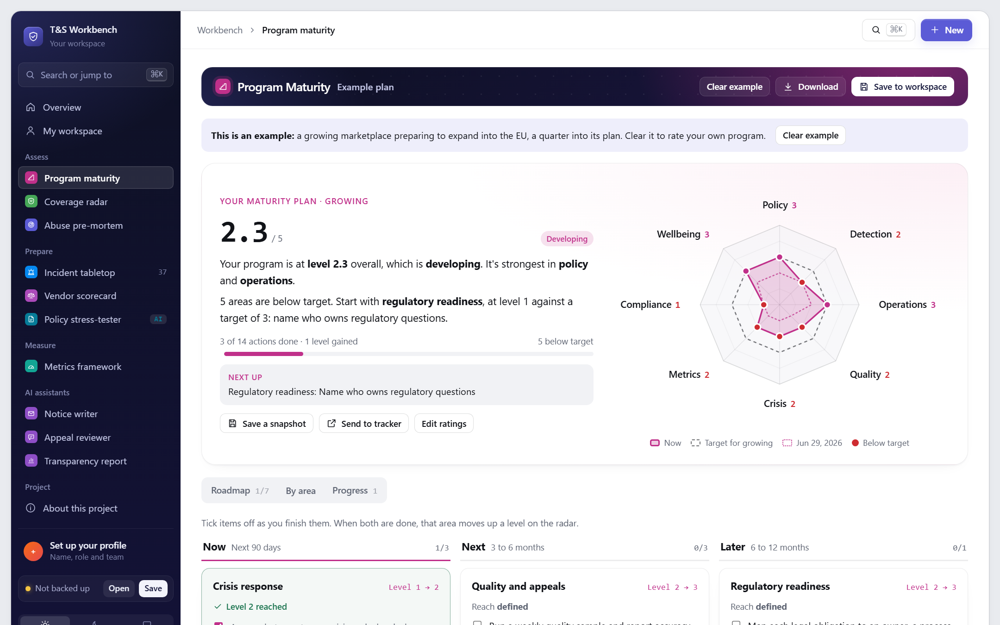
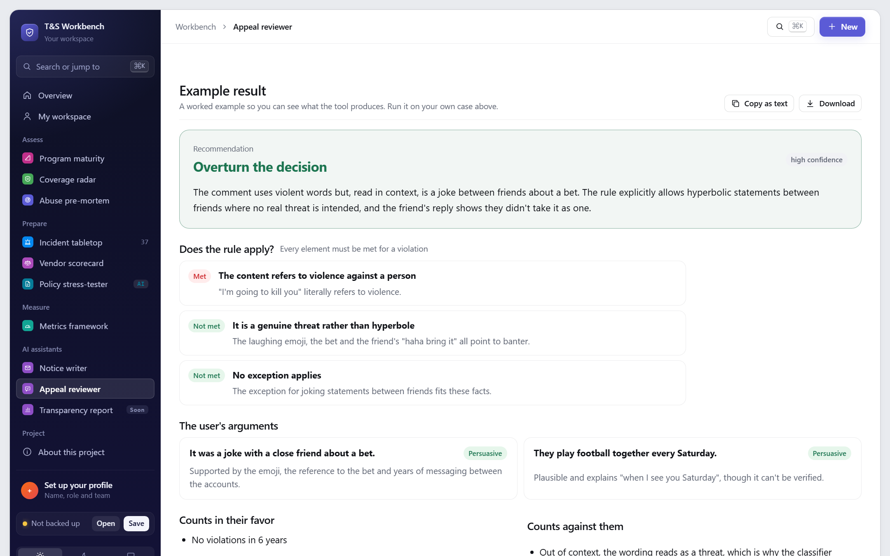

Abuse pre-mortem
See how a product will be misused before launch, and what to do first.
Try itCase studyTrust & Safety leader
I build practical tools that help product and safety teams keep people safe online, and I share them free.
Free, private, and nothing leaves your browser

Trust & Safety toolkit
Tools that help teams find risks before launch, rehearse incidents, measure what matters, choose vendors and write better policy, with the knowledge behind them published as open content.
Each one is its own open repo

See how a product will be misused before launch, and what to do first.
Try itCase study
Rehearse a crisis: 37 scenarios, with a lesson and the law behind every call.
Try itCase study

Choose a moderation vendor on evidence, with rubrics and RFP questions.
Try itCase study
See where your products' risk outruns your defenses, with the next step for each gap.
Try itCase study
Rate a T&S program in eight areas and get a phased roadmap for the biggest gaps.
Try itCase study
Work stays in the user's browser, so teams can describe unreleased products freely.
Built for product managers and founders, not only specialists. Jargon explains itself.
AI drafts and reviews; a person decides. Every number shows where it came from.